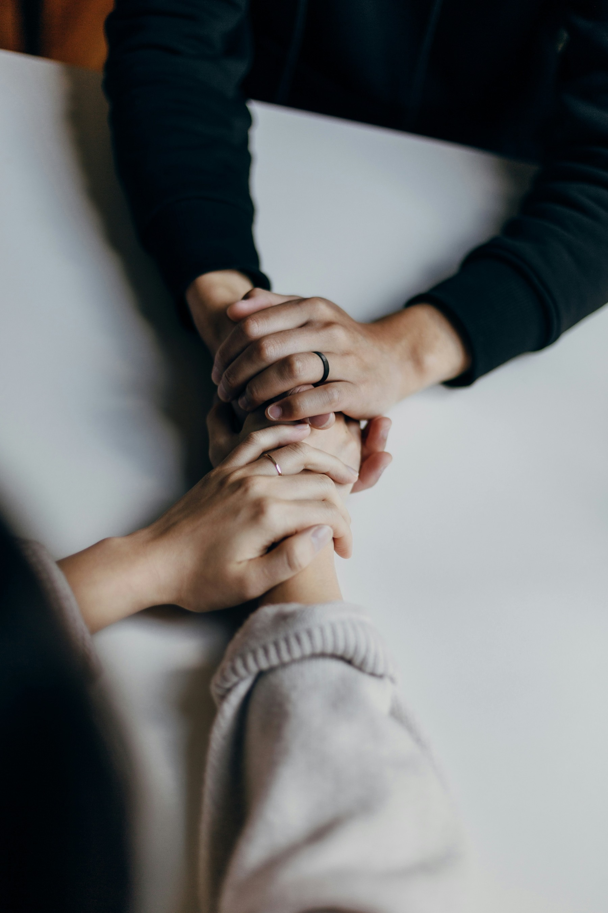

Turvallinen ja päihteetön yhteisö sinulle, joka etsit uutta alkua — ammattilaisten, vertaisten ja kristillisen lähimmäisenrakkauden tukemana.
Tuemme ja kuntoutamme päihteiden, rikosten ja muiden riippuvuuksien vuoksi elämänhallintansa menettäneitä ihmisiä takaisin yhteiskunnan jäseniksi.
Lataa 50v-juhlaliite (PDF)KAN ry on jäsenmäärältään Suomen suurin päihdetyötä tekevä voittoa tavoittelematon kansalaisjärjestö — jo 54 vuoden kokemuksella ja yli 2000 kannattajajäsenen tuella. Olemme kasvaneet vapaaehtoisesta vertaistukityöstä ammatilliseksi asumispalveluksi, joka yhdistää päihdekuntoutuksen ja yhteisöllisen tuen.
Palvelemme erityisesti ihmisiä, joilla on päihteiden, rikollisuuden tai muiden riippuvuuksien tausta. Autamme heitä löytämään tiensä takaisin yhteiskuntaan päihteettömässä yhteisössä, jossa jokainen kohdataan arvostavasti.
Kristillinen maailmankuva on osa meitä, mutta uskonnon harjoittaminen ei ole edellytys osallistumiselle. Kunnioitamme jokaisen ihmisarvoa, maailmankuvaa ja henkilökohtaisia valintoja.
"Voit osallistua ohjelmaamme sellaisena kuin olet — edellytämme sinulta vain sitoutumista päihteettömyyteen ja yhteisön sääntöihin."KAN ry:n toiminnan ydin

Toimintamme rakentuu neljän arvon varaan, jotka muodostavat pohjan kestävälle ja merkitykselle elämänmuutokselle.
Jokainen ihminen on arvokas, ainutlaatuinen ja auttamisen arvoinen. Jokaisella on toivoa.
Periaatteet: inhimillisyys, hienovaraisuus, oikeudenmukaisuus, kunnioitus, samanarvoisuus, armollisuus, kristillinen maailmankuva.
Turvallisuus tarkoittaa päihteettömyyttä, ennakoitavaa arkea ja ammatillista ohjausta.
Periaatteet: rehellisyys, luotettavuus, vakaus, hyvinvointi ja levollinen ilmapiiri sekä työntekijöiden ja asiakkaiden hyvinvoinnista huolehtiminen.
Muutosta ei tehdä yksin.
Periaatteet: rinnalla kulkeminen, vertaistuki, ilo, rauha, yhdessä tekeminen, talkoohenki.
Muutos on prosessi, joka ottaa oman aikansa.
Periaatteet: kärsivällisyys, ratkaisukeskeisyys, kasvu, laupeus.
Tuellasi mahdollistamme turvallisen yhteisön ja uuden alun sitä tarvitseville.